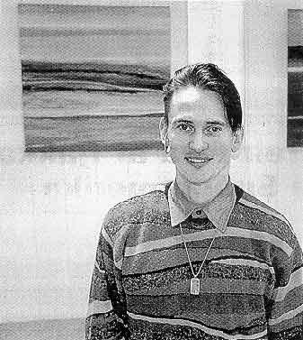

sosialurin
mikudagur 21.desember 1999
við dagfinn olsen
koyr blámannin á bláman
maður:glotti. teir báðir ova og [messell] hava givið út
eina djarva fløgu, har bæði orð og myndir og kanska eisini
tónleikurin eru øðrvísi. hon er gjørd á
veg til sumbiar.
manningin í bólkinum maður:glotti er aftur komin við fløgu.
fyri tvey ár síðani kom maður:glotti við fyrstu fløguni.
fyrrí ár kom [messell] við stakfløgu og nú hava
ova og [messell] givið enn eina fløgu undir heitinum maður:glotti
- nakin?
og teir smæðast ikki.
longu á fyrru fløguni, og pallframførsluni tá, hevði
bólkurin hug at taka upp ymisk evni, ið ikki eru vanlig at hoyra
um. eisini hendan fløgan er persónlig og tekstirnir fjala einki
og tykjast vera úr egnum veruleika.
maður:glotti leggur dent á tað persónliga við djarva
fløguhúsanum, har lítið er eftir til hugflogið.
onkutíð einki. tó er t.d. forsíðan stuttlig, tí
fløgan nevnist nakin? og spurningurin er góður, tí
er viðkomandi á forsíðuni nakin? ova er listafólk
og hevur staðið fyri húsanum, ið má matast at hava
ávíst listarligt viðri.
eisini orðini eru djørv. t.d. tá sungið verður um, at "eg helt meg hava funnið mær ein myrkamorreyðan at fylgjast við... nekari, tú ert littur, afrikanari, ...svertingur ...koyr blámannin á bláman, tí litirnir hóska sera væl saman".
eisini tónleikaliga er talan um øðrvísi stíl, enn vit vanliga houra og teldan hevur leiklut.
teir siga seg hava gjørt fløguna á
veg til sumbiar.
hon er upptykin í nibe, danmark og tutl gevur út.
sosialurin
mikudagur 3.desember 1997
við dagny joensen
(brot úr greinuni)
framsýning í orðum og myndum
-í mínum arbeiði havi eg altíð havt til uppgávu at seta litir samam. ofta
arbeiði eg við strípum, og so fekk eg hug at loysa upp fyri teimum. tað førdi
til málningalistina, sigur 27 ára gamli ova, sum framsýnir í fútastovu hesa
vikuna.
mánadagin lat sermerkt listaframsýning upp í fútastovu á kongabrúnni í havn.
tað er ova, listamaður, ið sýnir fram 13
málningar. afturvið hesum hevur ova skrivað 13 yrkingar, og saman við vinmanninum
[messell] sett løg til yrkigarnar, hava teir spælt inn eina fløgu, undir heitinum
"sum", ið plátufelagið tutl gevur út.
tá fólk vitja á framsýningini, verður ein faldari útvegaður, sum nágreiniliga
sigur frá myndum og tónleikinum, og hvussu hesir báður lutir sita saman. hyggur
tú at einari mynd, er tónleikaútgerð tøk, sum leiðir teg á just tað lagið, sum
myndin hoyrir til. myndirnar eru í alskyns dempaðum litum, samansettar í vatnrøttum
rípum, sum tilsamans mynda náttúru og bygdamyndir, sjógv og fjøll, alt eftir,
hvørji eygu skoða verkini.
ova er 27 ára gamal og er útbúgvin tekstildesignari á danmarks designskole í
keypmannahavn. útbúgvingin vardi fimm ár, men eftir hetta fór ova til finnlands
at útbúgva seg víðari í helsinki. ova býr í keypmannahavn, har hann saman við
fýra øðrum listfólkum hevur listaverkstað. tvey teitta arbeiða innan glaslist,
tvey sum tekstildesignarar og ein arbeiðir við málningalist. listaverkstaðurin
kallast "supplerende oplysninger". tað sigur kanska okkurt um breiddina í arbeiðinum
hjá ungu listafólinum í danmark.
hóast ova bert er 27 ára gamal, so hevur hann longu fingið góðar uppgávur at
arbeiða við. hann fæst serliga við binding og vevarbeiði, men brúkar eisini
tíðina at skriva yrkingar og tónleik. á designaraskúlanum vóru tvær sergreinar.
onnur var ætlað til design av hópframleiddum vørum og hin, sum kallaðist "unika",
er ætlað fólki, sum arbeiða við listaligum uppgávum burturav. ova gekk á "unika"
linjuni. hann vónar, at hann frameftir fær møguleika at arbeiða sum listamaður,
bæði í designyrkinum, men eisini sum málari og yrkjari.
fløgan "sum", ið ova og [messell] hava spælt inn undir heitinum "maður:glotti"
er at fáa á framsýningini og í plátuhandlunum. hon kostar 149 krónur.
framsýningin hjá ova er opin allar dagar í hesi viku til og við leygardegunum
frá kl. 15 - 19.
 |
framsýningin "13 málningar til 13 løg" hjá ova, er opin hvønn dag í hesi viku (1997) frá kl. 15 - 19. ova hevur eisini bundið troyggjuna hann er ílatin. |
|